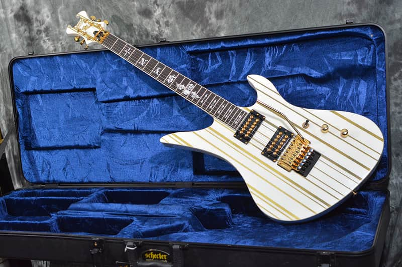
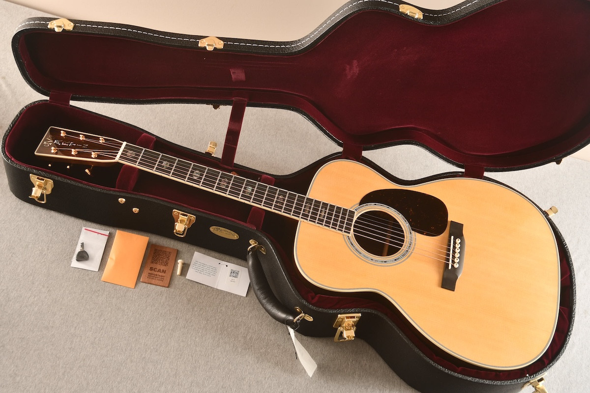
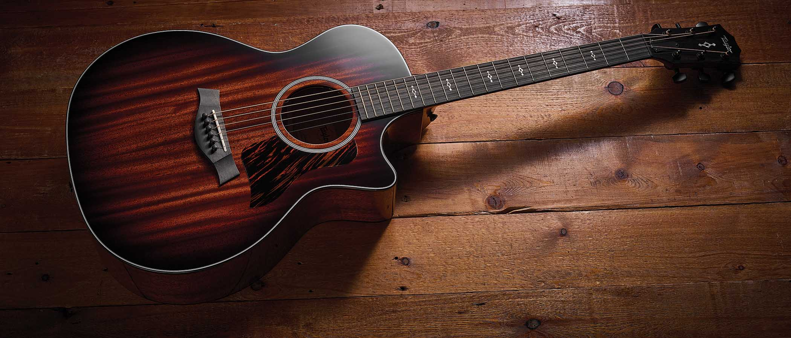
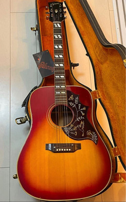
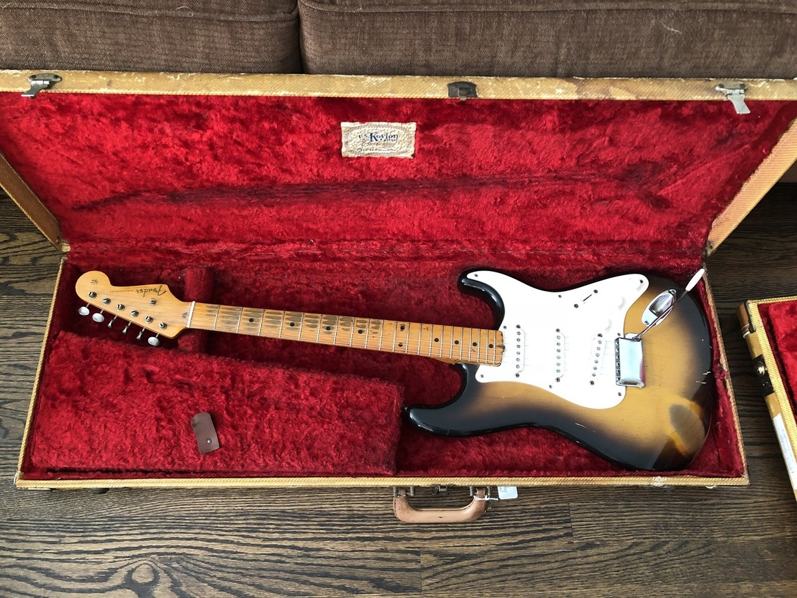
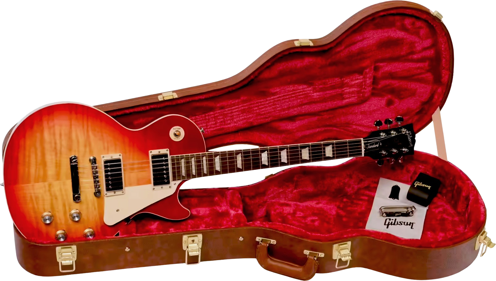

My Guitar Collection
These six guitars are my favorite guitars that have existed in my collection over the years. I do not still own all of them, but I have either owned and sold them or they still exist in my collection. Each guitar has a story and a reason why it is special to me. I have played them all, and each one has its own unique sound and feel that makes it stand out from the rest.

Synyster Gates Schecter
Electric Guitar | Signature Model | High-Output
This particular Schecter model is great for clear and aggressive tones that are perfect for leads, especially in heavier styles. It has a very distinct voice that scratches an itch I have not been able to scratch with other guitars. It is my go-to guitar for a perfect mix of articulation and power.

Martin Acoustic
Acoustic Guitar | Classic Tone | Balanced Projection
I did not specify a model of Martin guitar because I have owned several over the years and though each one has its own unique voice, they all share a well-balanced tone and resonance that works excellently for strumming and fingerstyle. If you ask me, Martin guitars are the best around for a rich, warm, and well projected sound.

Taylor Steel-String Acoustic
Acoustic Guitar | Steel-String | Daily Driver
My main guitar and the one I play almost every day. I use it for mainly fingerstyle playing while singing and practice. However, I tend to use it for small gigs and performances as well due to just how easy it is to play. It is one of the cheaper guitars in my collection which also makes it a bit easier for me to travel with without worrying about it getting damaged. It is a great guitar for the price and I would recommend it to anyone looking for a solid steel-string acoustic.

1969 Gibson Acoustic
Acoustic Guitar | Vintage | 1969 Model
This vintage Gibson has a special character and sound that really only comes with age. It was given to me by my uncle after he lost three fingers in a carpentry accident. He was a great guitarist and he wanted the guitar to go to someone who could still play and appreciate it. I have played it for years and it has a very unique voice that is hard to replicate with modern guitars. It is a very special guitar to me and I will always cherish it.

Fender Stratocaster
Electric Guitar | Single-Coil | Versatile
It is hard to say anything bad about a Fender Stratocaster. The Strat has a classic bright sparkly tone, dynamic response, and super expressive quack that makes it perfect for cleaner tones, bluesier feels, or something a bit more touchy and sensitive. Super versatile and always feels good to play a Strat.

Gibson Les Paul
Electric Guitar | Humbucker | Warm Sustain
The best way to describe a Gibson Les Paul is thick and warm. It has a beautiful sustain and a true classic rock voice. A perfect choice for a singing lead or chunky rhythm work. The Les Paul is addictive and full-bodied and that sound never gets old.